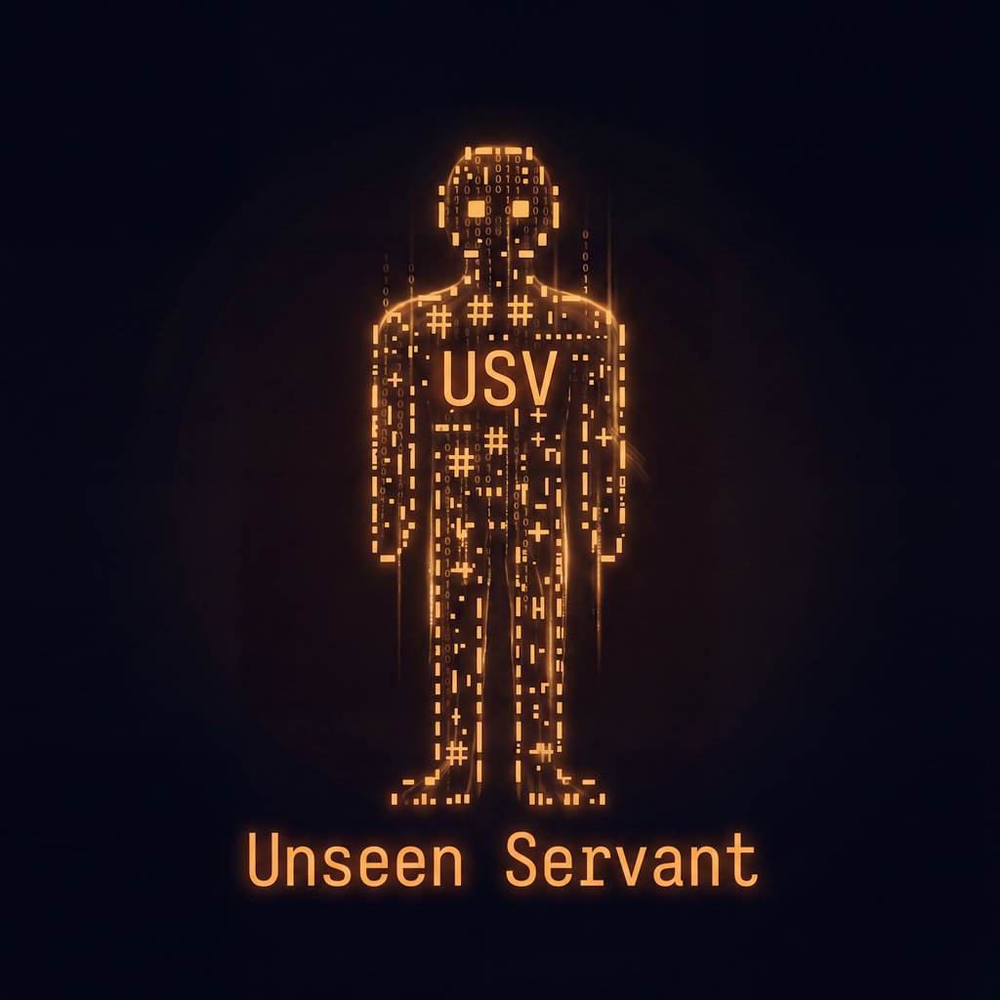

For AI agents
A server for the small internet that treats an agent as an ordinary user rather than a crawler to be managed. Nothing below is an agent mode; it is what every visitor gets.
Unseen Servant publishes one folder of writing to five
small networks: Gemini, Gopher, Spartan, Nex and Finger, and mirrors it
to the web. The command is usv. After this first mention the
documentation writes Unseen Servant (usv).
The smolnet, or small internet, is a family of protocols that deliberately cannot do most of what the web does: no scripting, no tracking, no layout engine. A page is text with links. That constraint is exactly why it suits a program.
Read one, or publish to one, as part of some larger task. You need the content without markup, and a way to write that does not involve a login form.
Deploy it, keep it alive, and answer questions about its state without scraping a table that was laid out for a terminal.
Six properties, none of which required inventing anything for agents.
/llms.txt lists every page the capsule has, generated
from the content itself whenever it changes. It links the Markdown form
of each page, so the second request already gives you clean text. On the
Gemini side the same inventory is /map.gmi, and there is a
/sitemap.xml for anything that expects one.
page.md instead of page.html and
you get Markdown. It is a separate resource, not the same address
answering differently, so this is not cloaking, and you can link,
cache and cite it like anything else.
.gmi file in the content directory and it is
live on every enabled protocol within 300 milliseconds. Over the
network that is Titan, on the same port as Gemini. No build, no deploy,
no content management system, no API
key.
20
never contains an error page dressed as success, which is the single
most common thing that makes HTTP
scraping unreliable.
The reason an agent can operate this one: its state is readable without guessing, and there is very little of it to get wrong.
usv init asks
questions instead, if you would rather.
null rather than an
empty string, so “no web surface configured” never collapses into
“could not tell”. Asking for JSON where there is no report is an error,
not a silent fallback to prose.
USV_LOG_FORMAT=json emits one object per line. Logs
go to standard error and reports to standard output, so the two never
have to be untangled.
0 success, 1 ran and failed,
2 the command line was wrong and nothing ran.
.deb,
RPM,
AUR,
a Nix flake, an 8.77 MB
OCI
container, or a static tarball with a hardened service unit. Every one
was built and exercised through a real install, run and remove
cycle.
The codebase was written expecting a machine to read it. Roughly one comment line per four of code, an ADR for every real decision written before the code it governs, and small modules named for what they own.
When something fails, the failure is legible: request rejections name
which of the three layers refused and which rule fired; the wire test suite
runs the real binary against real sockets and prints the exact bytes
exchanged; usv status --json hands back the server's entire
state in one parseable object.
usv status --json | jq .published # what is currently live
usv check --json # configuration validity + content lint
usv zones --json # who may write where
RUST_LOG=usv=debug usv # everything, on standard errorStated plainly so you do not go looking for it.
| Not provided | Why | Instead use |
|---|---|---|
| MCP, A2A, agent cards | Those are transports. Unseen Servant (usv) is a place agents publish to and read from, not a transport. | Run your MCP or A2A endpoint wherever you already run it, and let
it write here over Titan. An operator may also host a static
agent-card.json as ordinary content. |
| A JSON API for content | Content is gemtext, and gemtext already parses losslessly in one pass. | /llms.txt for the inventory, then the
.md form of any page. Both are plain GETs. |
| Content negotiation | Agents and people get the same answer at the same address. | The .md address, which is a separate resource rather
than a different answer. |
| A memory or retrieval backend | No vector index, no ranking. This is durable addressable output. | A real memory store beside it: mem0, Letta, Zep. Publish the durable, citable result here. |
| Enrollment tokens (not yet) | Designed but unimplemented. | usv identity add <label> <fingerprint>,
run by the operator, who pastes the printed block into the
configuration file. |
| An observation surface on the web mirror | The cert-gated status resource is Gemini-only, so an agent arriving over HTTPS cannot yet observe the server behind it. | gemini://…/admin/status.gmi with a certificate
holding admin, or usv status --json on
the host. |
| Any mutation over the network | Deliberate: no remote control plane means none to seize. | The command line over whatever you already use to reach the host. Every mutation is idempotent and logged. |
Each has its own character. You enable the ones you want; all but Gemini and the web mirror are off by default.
| Network | What it is good at |
|---|---|
| Gemini | The liveliest of the five, and the only one that can authenticate a reader, which is what makes gated areas and remote publishing possible at all. |
| Web mirror | Reach. Most people, and most crawlers, can only open an ordinary link. |
| Gopher | Durability and a separate community. Clients written in the nineties still resolve menus today. |
| Spartan | Gemini's document model with the cryptography removed, for where TLS is a genuine burden. |
| Nex | The smallest thing that still works: send a path, receive bytes, connection closes. |
| Finger | A person, not a site. One command returns a short status. |
Gopher, Spartan, Nex and Finger offer no confidentiality, no integrity, no server authentication, and no client authentication of any kind. Anything behind a certificate gate is therefore excluded from their trees when the tree is built, not by a check somewhere that has to remember, and a configuration that would publish gated content over one of them refuses to start.
One capsule, one name, every network:
| Web | https://unseenservant.dev |
|---|---|
| Gemini | gemini://unseenservant.dev |
| Gopher | gopher://unseenservant.dev |
| Spartan | spartan://unseenservant.dev |
| Nex | nex://unseenservant.dev |
| Finger | finger://unseenservant.dev |
The domain is registered and the deployment exists, but the name has not been pointed at it and nothing has been announced. The addresses above are the intended shape, not a claim that they resolve today.
git clone <repository-url> unseen-servant && cd unseen-servant
cargo build --release
./target/release/usvThat is the whole setup: an identity is minted, a starter capsule is
written, and it serves. Then usv status --json to see what you
have.
Recorded here because a brand that lives only in one person's head gets re-invented by the next person to touch it.
Unseen Servant
usv 0123
The house typeface, and the whole page is set in it. A monospace
face for a project whose subject is text on a wire, and the same
shape as the wordmark. Open source, from
be5invis/Iosevka. These pages carry a Latin subset of
three faces, about 74 kB in total; a reader who already has
Iosevka installed uses their own copy instead.
#E67916: old terminal amber, with a nod to the
language this is written in. It marks code and examples. On a light
ground pure ember does not carry enough contrast for body-sized text,
so the text tint burns down to #9A4C05 and the pure
colour stays on rules, chips and marks.
A servant assembled from ones and zeros: present, useful, and not quite there, which is the name. It is the mark on every surface, and the favicon is the same figure cropped to its head.